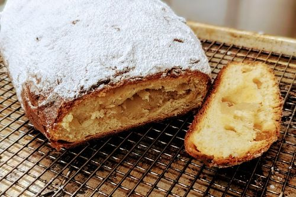

|  | |
| 20g | bread flour |
| 80ml | water |
| ◇ | |
| 20ml | rose water |
| 3ml | fiori di sicilia |
| 3 | eggs |
| 6g | active dry yeast |
| ◇ | |
| 350g | bread flour |
| 50g | sugar |
| 8g | salt |
| ◇ | |
| 35g | butter |
| 90g | cream cheese |
| ◇ | |
| 40g | candied orange peel |
| 40g | candied lemon peel |
| 250g | marzipan (optional) |
| ◇ | |
| 30g | butter |
| 20g | confectioner's sugar |
Combine flour, and water and heat in microwave for about 40 seconds, or until it reaches 150°F (65°C). Whisk tangzhong until smooth and cool down to room temperature. Add rose water, fiori di sicilia, eggs, and yeast, then whisk until homogenous.
Combine dry ingredients, mix in wet ingredients until a dough forms, tip onto counter, and knead for about 5 minutes.
Add butter and cream cheese, continue kneading for about another 8 minutes. Dough will be very sticky, but there should be noticeable gluten formation. Desired dough temperature is 25°C (77°F).
Finally, mix in dried fruit or candied citrus peel, form a dough ball, and cover at room temperature.
Let ferment for one hour then fold tightly and transfer to the refrigerator for 12 to 24 hours of cold fermentation.
Pre-shape, rest for 20 minutes, final shaping, followed by final proof for about two hours. You can add the marzipan (if using) during final shaping.
Spray with water, then bake in a pre-heated oven at 160°C (325°F) for about 60 minutes. While still hot, brush with melted butter, then sprinkle confectioner's sugar all over the stollen.
Note: You can make fresh marzipan by blending 125g almond flour, 100g confectioner's sugar, one egg white, 30ml rose water, and 10ml almond aroma.